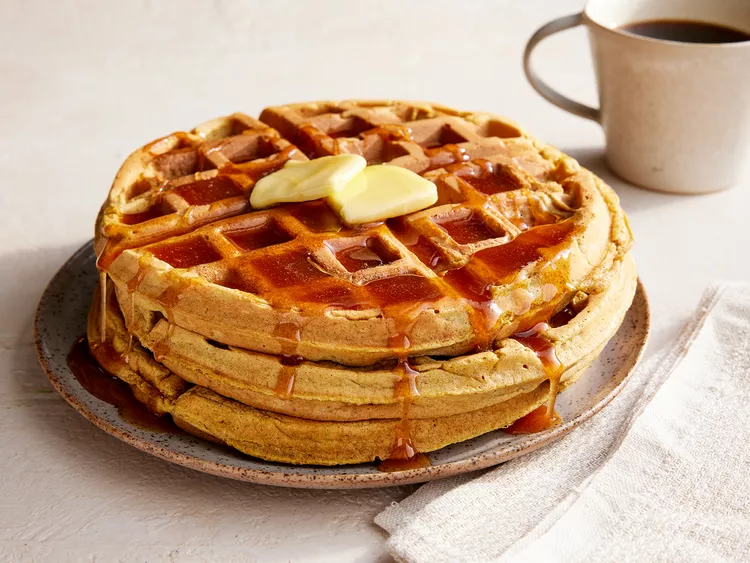

Description
A fall, winter and special occasion family favorite, these are fairly easy to make and delicious! They're sure to please even picky eaters.
Ingredients
Pumpkin Waffles
- 2 ½ cups all-purpose flour
- 4 teaspoons baking powder
- 2 teaspoons ground cinnamon
- 1 teaspoon ground allspice
- 1 teaspoon ground ginger
- ½ teaspoon salt
- ¼ cup packed brown sugar
- 1 cup canned pumpkin
- 2 cups milk
- 4 eggs, separated
- ¼ cup butter, melted
Apple Cider Syrup
- ½ cup white sugar
- 1 tablespoon cornstarch
- 1 teaspoon ground cinnamon
- 1 cup apple cider
- 1 tablespoon lemon juice
- 2 tablespoons butter
Steps
- Preheat a waffle iron according to manufacturer's instructions.
- Combine the flour, baking powder, cinnamon, allspice, ginger, salt, and brown sugar in a mixing bowl. In a separate bowl, stir together the pumpkin, milk, and egg yolks. Whip the egg whites in a clean dry bowl until soft peaks form.
- Stir the flour mixture and 1/4 cup melted butter to the pumpkin mixture, stirring just to combine. Use a whisk or rubber spatula to fold 1/3 of the egg whites into the batter, stirring gently until incorporated. Fold in the remaining egg whites. Cook waffles according to manufacturer's instructions.
- To make the syrup, stir together the sugar, cornstarch, and cinnamon in a saucepan. Stir in the apple cider and lemon juice. Cook over medium heat until mixture begins to boil; boil until the syrup thickens. Remove from heat and stir in the 2 tablespoons of butter until melted. Serve warm.
Credits
Return to top
Homepage